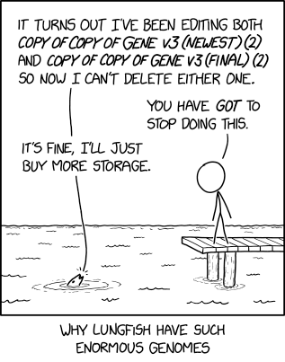

Intermediate Git and GitHub
Intermediate Git and GitHub
As you get settled…
Did you put your GitHub username in this spreadsheet?
Accept GitHub repository invitation in email connected to GitHub account
Accept Posit Cloud invitation: https://posit.cloud/spaces/748776/join?access_code=t8MXFJS3goxS3CQiErIs7KN1ms8fH4M1pN5JlLXT
Introductions
Name, pronouns, group you work in
What brought you here?
What content (book, tv, movie, podcast…) have you enjoyed lately?
Learning Objectives
By the end of this workshop, you will be able to:
- Make commits in a local repository via the command line
- Make pushes and pulls to a remote GitHub repository via the command line
- Make branches and perform pull requests with the command line
- Describe software such as GitHub Desktop that as serves as point-and-click alternatives
Why we are doing this
Version control, reproducibility…
Git, notoriously

Let’s master the basics!
Review Git’s Data Model
What’s a repository (also known as repo)?
What’s a commit?
What’s a branch?
What’s a merge? What’s a pull request?
Git’s Data Model
- Git keeps track of a project within a designated directory, which is called a repository (also known as repo).
- You can save the state of your repository by making a commit: Git will save the repository’s directory tree, a link to the previous commit, and metadata.

Branching and Merging
o <-- o <-- o <-- oBranching: when branching commit paths are created.
o <-- o <-- o <-- o
^
\
--- o <-- oMerging: when two branches are integrated together. This sometimes require careful communication, and this is done in GitHub via a “pull request”.
o <-- o <-- o <-- o <---- o
^ /
\ v
--- o <-- oLast week vs. this week

Source: https://janvi01.hashnode.dev/getting-started-with-git-and-github-a-beginners-tutorial
Part 1: Install and using a repository by ourselves
Setup
curl -sS https://webi.sh/gh | shgit config --global user.email "you@example.com"
git config --global user.name "username"
gh auth login? What account do you want to log into? GitHub.com
? What is your preferred protocol for Git operations? HTTPS
? Authenticate Git with your GitHub credentials? Yes
? How would you like to authenticate GitHub CLI? Login with a web browserYou will be given a code, and you will provide that code to GitHub via https://github.com/login/device.
Create a repository
Give it a repo name, set it to public, create a README.
Find the clone URL by clicking on “Code”:

Cloning a repository
git clone your_clone_URL
cd your_repo_name
Git status
We look at our repository’s status:
git status
On branch main
Your branch is up to date with 'origin/main'.
nothing to commit, working tree cleanGit’s Staging Model
Once Git tracks your file, it can have 3 possible states:
- Modified means that you have changed the file but have not committed it to your local repository yet.
- Staged means that you have marked a modified file in its current version to go into your next commit.
- Committed means that the data is safely stored in your local repository.
Why offer this intermediate staging ground?
Temporary or sensitive files
Not ready for a commit yet
Making your first commit
Create a file:
touch chris.txtgit status
On branch main
Your branch is ahead of 'origin/main' by 1 commit.
(use "git push" to publish your local commits)
Untracked files:
(use "git add <file>..." to include in what will be committed)
chris.txt
nothing added to commit but untracked files present (use "git add" to track)Take it from untracked to staged.
git add chris.txt
git status
On branch main
Your branch is ahead of 'origin/main' by 1 commit.
(use "git push" to publish your local commits)
Changes to be committed:
(use "git restore --staged <file>..." to unstage)
new file: chris.txtCommit it with a message:
git commit -m "added chris.txt"
[main 31f7b15] added chris.txt
1 file changed, 0 insertions(+), 0 deletions(-)
create mode 100644 chris.txtStaging model

Practice!
- Make some changes and make another commit by yourself.
Staging model continued

Updating the remote GitHub repo
The command git push will put your local repository on the remote repository.
~/IntroGitDaSL/Collaborative_Git_GitHub_Student_Practice$ git push
Enumerating objects: 5, done.
Counting objects: 100% (5/5), done.
Delta compression using up to 8 threads
Compressing objects: 100% (3/3), done.
Writing objects: 100% (3/3), 313 bytes | 313.00 KiB/s, done.
Total 3 (delta 1), reused 0 (delta 0), pack-reused 0
remote: Resolving deltas: 100% (1/1), completed with 1 local object.
To https://github.com/fhdsl/Collaborative_Git_GitHub_Student_Practice.git
6e97634..0c82b47 main -> mainIf the remote repository has been updated, you will have to run git pull before you can run git push.
Where are we now?
Source: https://janvi01.hashnode.dev/getting-started-with-git-and-github-a-beginners-tutorial
Part 2: Branches and pull requests on a shared repository
Linear:
o <-- o <-- o <-- oBranching:
o <-- o <-- o <-- o
^
\
--- o <-- oBranching and Merging:
o <-- o <-- o <-- o <---- o
^ /
\ v
--- o <-- oOur shared repository:
https://github.com/fhdsl/bookrecs_winter_2026
To create a copy of this repository on your local:
git clone https://github.com/fhdsl/bookrecs_winter_2026.gitCreating a branch on the remote

Making changes to this new branch locally
The branch clo2_development is created on the remote, but it hasn’t been updated locally. We run git pull locally to update it and switch to that branch via git checkout.
% git pull
From https://github.com/fhdsl/Intermediate_Git_GitHub_Student_Practice_Summer_2025
* [new branch] clo2_development -> origin/clo2_development
Already up to date.
% git checkout clo2_development
Branch 'clo2_development' set up to track remote branch 'clo2_development' from 'origin'.
Switched to a new branch 'clo2_development'We can use git checkout main to look switch back to our main branch. We can also use git branch to see the branches on a repository.
Making changes to new branch
Edit the file that is unique to you.
% git add chris.txt
% git commit -m "Edited chris.txt"
% git pushWhen you have pushed changes to the branch, you will see an option to “Compare & pull request”. Click on it.

Pull request model
A pull request is a way to propose changes from a branch before it is merged back into the main repository.
This is commonly used in collaborative work in which a branch needs to be approved by other members on the team before it is integrated into the main project.
Creating a pull request
You will see that you are trying to merge clo2_development into main on the remote. It also requires you to write a description of what you did on your branch.

Creating a pull request

Appendix: Undoing
Unstage a file
Suppose you staged a file, and then realized you don’t want the file to be staged for the commit. To unstage the file so that it returns to “modified”, run git restore --staged [fileName]
Unmodify a file
After your commit, you make some new changes to a file so that it is “modified” You realized that you are no longer interested in this modification and want to un-modify it back to the last commit. Run: git restore [fileName].
Warning: This cannot be undone!
Revert a commit
After several commits, you realized that you wanted to undo a specific commit. Run: git revert [commit identifier]. This will undo that commit. However, if the content of that commit has experienced intermediate changes, it will raise a conflict.
You can find the “commit identifier” via git log to see your commit history.
Reset to a previous commit
To “time-travel” back to a previous commit, run: git reset --hard [commit identifier].
You can find the “commit identifier” via git log to see your commit history.
Warning: This cannot be undone!
Appendix: A Pull Request with conflicts
Everyone create a new branch
I’ll modify
README.mdon the main branchYou make changes to
README.mdon your branch, and make a Pull RequestWhat to do with a conflict?
A nice guide to this can be found here.
Appendix: Useful resources
Appendix: Getting Git and GitHub on your computer
Downloading and installing Git: https://git-scm.com/book/en/v2/Getting-Started-Installing-Git
If you are on a Mac, you can also download and install Git via Developer Tools.
To connect Git to GitHub, there are a few ways to do it:
Via the command line: You can install a command line tool called GitHub Command Line Interface to help you connect to GitHub: https://docs.github.com/en/github-cli/github-cli/quickstart. This is how we did it in on Posit Cloud.
Via the command line: you can create a personal access token to connect to GitHub.
Point and click: GitHub Desktop can be downloaded here: https://desktop.github.com/.
Point and click: you can connect to GitHub via RStudio (https://happygitwithr.com/rstudio-git-github) and VSCode (https://code.visualstudio.com/docs/sourcecontrol/overview).
How was the workshop for you today?
https://forms.gle/AyiVRsqZM4BBGLE98